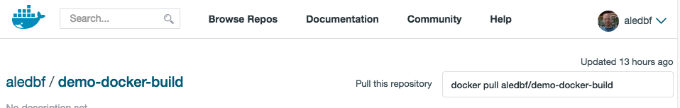

Alejandro de Brito Fontes
github.com/aledbf
alejandro.debrito@soficom.cl
Heroku buildpacks:
Ejemplo utilizando Heroku buildpacks:
demo-nodejs-express
├── package.json
├── Procfile
└── server.js
web: node server.jsvar express = require('express');
var app = express();
app.get('/', function(req, res){
var mensaje = process.env.POWERED_BY || 'Deis';
res.send('Powered by ' + mensaje);
});
var port = process.env.PORT || 5000;
server = app.listen(port);
console.log('Escuchando en puerto %d', server.address().port);
Docker build:
cat DockerfileFROM ubuntu-debootstrap:14.04
RUN apt-get update && \
apt-get install -y netcat-openbsd && \
apt-get clean && \
rm -rf /var/lib/apt/lists/* /tmp/* /var/tmp/*
ENV POWERED_BY Deis
CMD while true; do echo "HTTP/1.1 200 OK\n\nPowered by $POWERED_BY" | nc -l -p 1500; done
EXPOSE 1500
deis pull (docker pull):
https://index.docker.io

A diferencia de otros PaaS como Heroku o AppEngine
deis esta pensado para correr en equipos sobre los que se tiene control